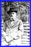
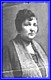
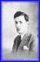
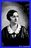
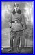

P O L A N D -- scroll down and/or click thumbnails for larger photos
Israel Lopata

Israel Lopata

Szajndla

Albert
Albert & Régine
Hélène Rozenbaum
Hélène & Céline

Sarah
Sarah
Maurice
Maurice
Maurice & X

Salomon(?)
Leon
Sarah & Salomon (ctr)
Salomon
Olek & Sophie
Hermann & Salomon
Hermann
Hermann & family
Loutek
Shaya ?
Warsaw 1931